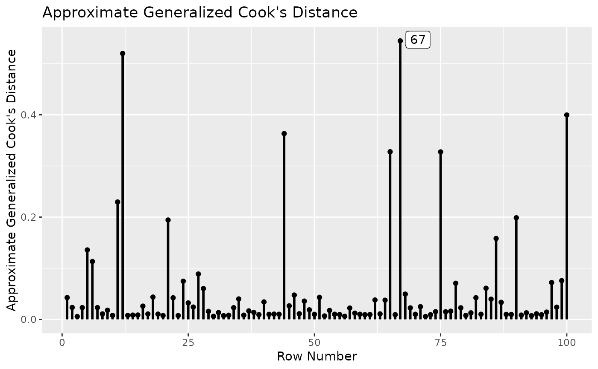

A four-variable dataset with 100 cases, with one influential case.
Format
A data frame with 100 rows and 5 variables:
- case_id
Case ID. Character.
- iv1
Predictor. Numeric.
- iv2
Predictor. Numeric.
- m1
Mediator. Numeric.
- dv
Outcome variable. Numeric.
Examples
library(lavaan)
data(pa_dat2)
mod <-
"
m1 ~ a1 * iv1 + a2 * iv2
dv ~ b * m1
a1b := a1 * b
a2b := a2 * b
"
fit <- sem(mod, pa_dat2)
summary(fit)
#> lavaan 0.6.15 ended normally after 1 iteration
#>
#> Estimator ML
#> Optimization method NLMINB
#> Number of model parameters 5
#>
#> Number of observations 100
#>
#> Model Test User Model:
#>
#> Test statistic 4.632
#> Degrees of freedom 2
#> P-value (Chi-square) 0.099
#>
#> Parameter Estimates:
#>
#> Standard errors Standard
#> Information Expected
#> Information saturated (h1) model Structured
#>
#> Regressions:
#> Estimate Std.Err z-value P(>|z|)
#> m1 ~
#> iv1 (a1) 0.326 0.097 3.353 0.001
#> iv2 (a2) 0.253 0.091 2.793 0.005
#> dv ~
#> m1 (b) 0.326 0.079 4.105 0.000
#>
#> Variances:
#> Estimate Std.Err z-value P(>|z|)
#> .m1 0.669 0.095 7.071 0.000
#> .dv 0.548 0.078 7.071 0.000
#>
#> Defined Parameters:
#> Estimate Std.Err z-value P(>|z|)
#> a1b 0.106 0.041 2.597 0.009
#> a2b 0.083 0.036 2.309 0.021
#>
inf_out <- influence_stat(fit)
gcd_plot(inf_out)
